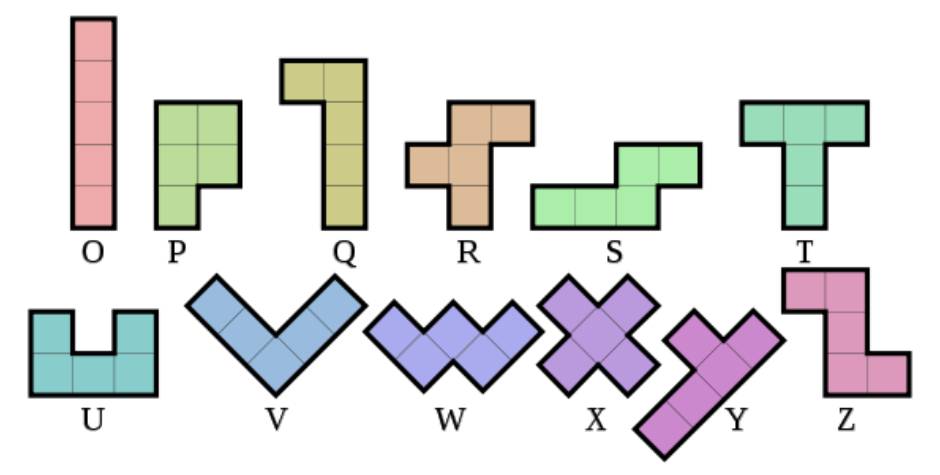

Conway inspired me with his playful approach toward mathematics. He passed away from COVID in 2020.
I'm very new at making hunt-style puzzles. I hope it wasn't too frustrating to solve.
Look and Say
This puzzle is about look-and-say sequence, which was studied by Conway. Undo 5 iterations of look-and-say to get a number A repeated B times. Sort by A and read B to get the answer VOICE.
| Look and say sequence | A | B | Letter |
|---|---|---|---|
| 1111111111111111111111 → 221 → 2211 → 2221 → 3211 → 131221 | 1 | 22 | V |
| 222222222222222 → 152 → 111512 → 31151112 → 1321153112 → 1113122115132112 | 2 | 15 | O |
| 333333333 → 93 → 1913 → 11191113 → 31193113 → 132119132113 | 3 | 9 | I |
| 444 → 34 → 1314 → 11131114 → 31133114 → 1321232114 | 4 | 3 | C |
| 55555 → 55 → 25 → 1215 → 11121115 → 31123115 | 5 | 5 | E |
Pentominoes
Pentominoes are usually refered to using Solomon Golomb's naming scheme, but Conway proposed an elegant alternative that uses consecutive letters from O to Z. Identify the pictures and Conway's pentomino names. There is exactly one difference in letter for each picture. Sort by picture's wrong letter and reading the wrong pentomino names reveal the answer SPROUTS, a combinatorial game created by Conway.
| Picture | Set of pentominoes |
|---|---|
| FROSTY | TROSTY |
| OCTOPUS | ORTOPUS |
| OYSTER | OYSTUR |
| PASSPORT | PSSSPORT |
| ROBOT | ROPOT |
| SWORD | SWORO |
| YOGURT | YOSURT |
Next Doomsday
This puzzle concerns Doomsday Algorithm, which was invented by Conway. Find the next doomsday and read the date to get the answer THURSDAY. All the dates given in the puzzle also happen to be Thursdays.
| Given date | Next doomsday | Letter |
|---|---|---|
| 2001-06-14 | 2001-06-20 | T |
| 2002-08-01 | 2002-08-08 | H |
| 2003-03-20 | 2003-03-21 | U |
| 2004-01-15 | 2004-01-18 | R |
| 2005-12-15 | 2005-12-19 | S |
| 2006-03-30 | 2006-04-04 | D |
| 2007-07-26 | 2007-08-01 | A |
| 2008-04-24 | 2008-04-25 | Y |
Winning Ways
This puzzle is depicting game states of Hackenbush, a combinatorial game created by Conway. A detailed analysis of the game can be found in chapter 7 of "Winning Ways for Mathematical Plays", which was coauthored by Conway (and Hackenbush is shown on the cover of the latest edition of the book), but the given game states are small enough to just brute force by hand. Reading the unique winning moves yields NIMBER, which is a number system used to evaluate the positions of Green Hackenbush and other impartial games like Nim.
META: Atlas of Sporadic Groups
This last part is refering to sporadic groups, where Conway had significant contribution in their development. The diagram given is showing subquotient relations of the 26 sporadic groups (same diagram is given in the wikipedia page for sporadic groups).
The title is also referencing ATLAS of Finite Groups. Conway was one of the authors of the initial book version. The look of this puzzle is very close to the atlas site to confirm this lead. The page for sporadic groups gives us the order to match the letters in the feeder answers to sporadic groups, and the answer is ICOSIANS, yet another mathematical object created by Conway.
Game of Life wasn't used in the puzzle, because Conway was annoyed by the fact that many people only knew him for it and nothing else.